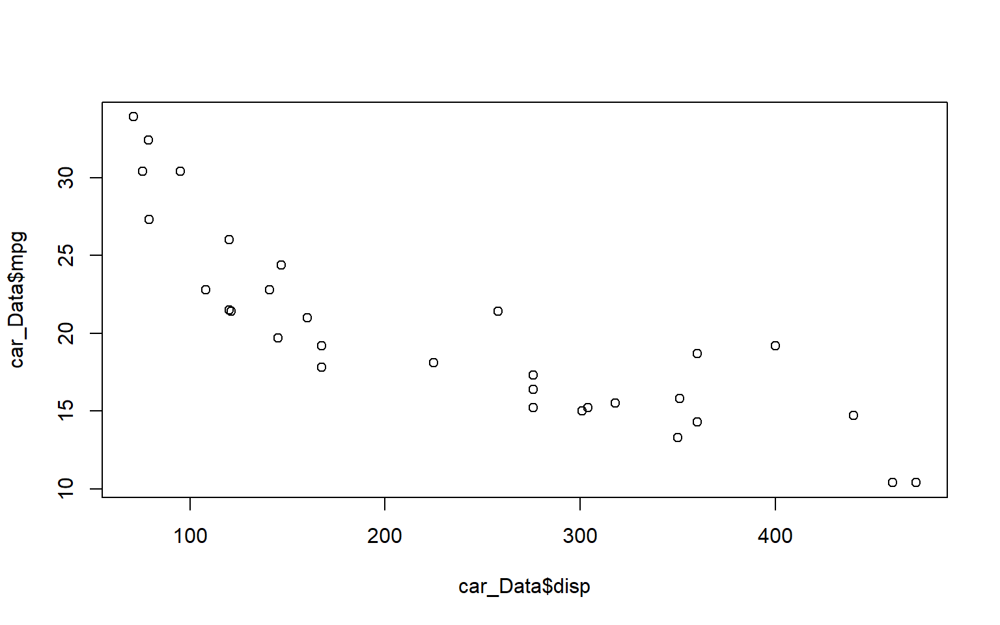
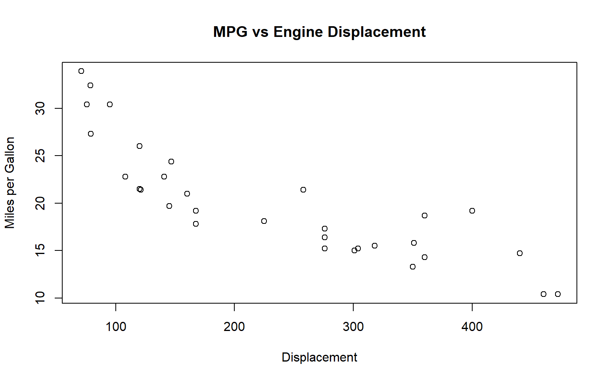
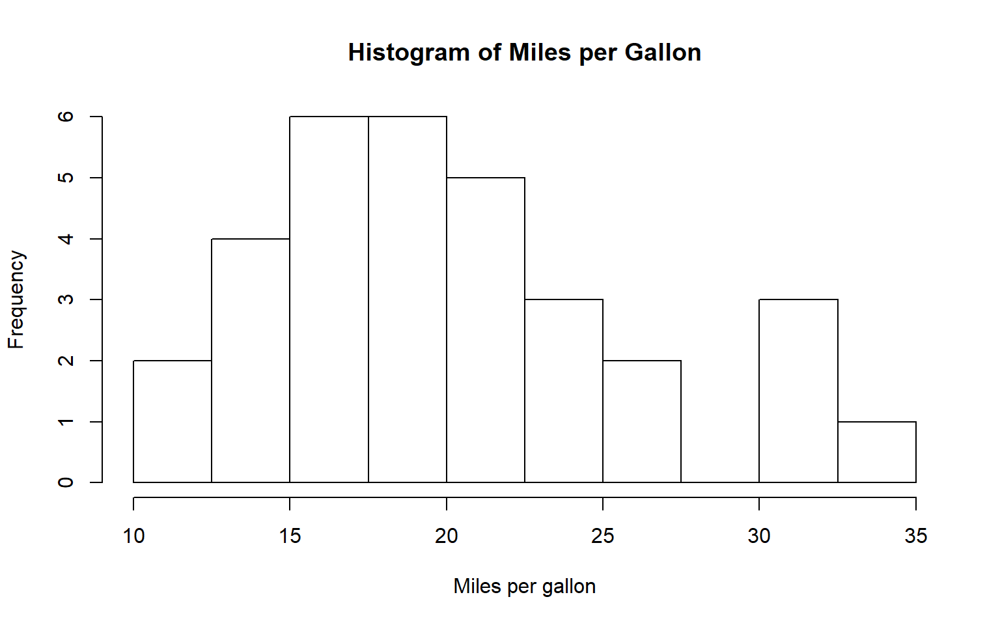
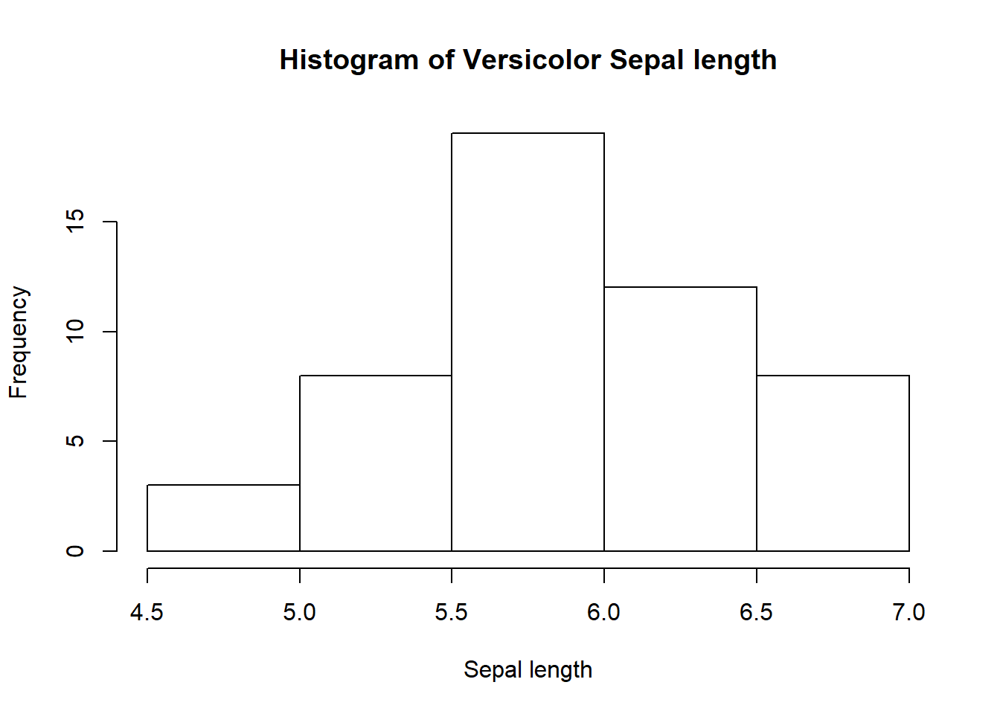
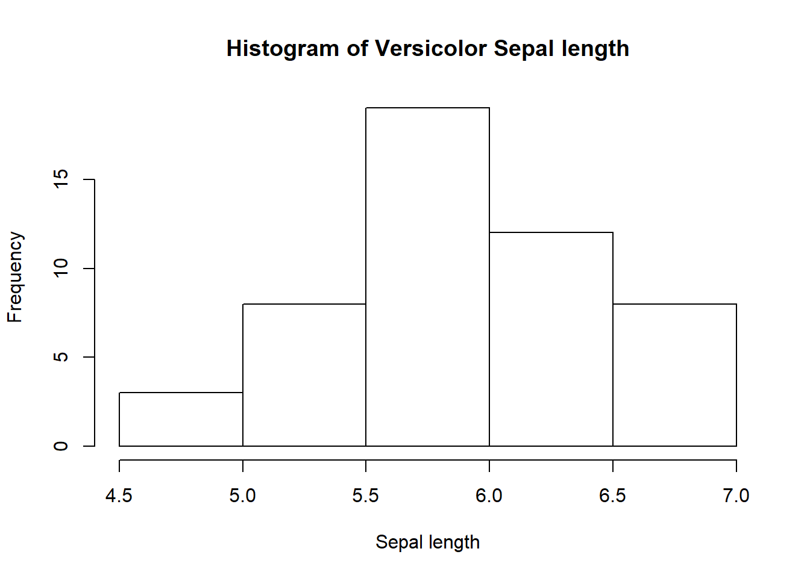

Chapter 2 Introduction to R
2.2 Basics
R studio contains four panels: a script panel where you can save your code (we will introduce this later so to begin there will just be three panels), a console where you can enter and run your code and where the outputs are displayed, an environment which lists the objects you create, and another window which includes help, files and displays any plots you create.
Our course starts in the R console, which those of you who are familiar with R but not RStudio will recognise. We will enter commands as input into the console, and receive output from the console. We will start with some simple basic operations, for which R is clearly very excessive.
2.2.1 Basic operations
Entering 1+1, we get the output [1] 2. The output is 2, but the [1] lets us know that the number 2 is the first number of output. If we had an output that was particularly large (e.g. 100 seperate numbers) then r may let us know that the first row displayed starts with the first value [1] and the second row starts with the [x]th value.
## [1] 2## [1] 3## [1] 21## [1] 10002.2.2 Objects
R is object orientated, which bascially means when we work in R we are generally writing code to make changes to an object (e.g. a dataset), based on other objects. An object can take a number of forms (e.g. a number, a vector of numbers, a matrix, a data-frame). We can then use these objects going forward rather than the values directly. Operations can be applied to these objects, and objects can be over-written. If you understand how to manipulate objects you are most of the way there.
## [1] 8## [1] 9## [1] 92.2.3 Overwriting / Manipulating Objects
We can overwrite our objects. But be careful, just because we overwrite something doesn’t mean other objects created in the code before update.
## [1] 10## [1] 11## [1] 6## [1] 02.2.4 Seeing our Objects
Sometimes we have so many objects we can’t see them in the environment.
## [1] "a" "b" "x" "y" "z"2.2.5 Removing Objects
# sometimes we may want to remove an object.
rm(a)
# multiple objects at once
rm(x,y)
# remove all objects
rm(list=ls())Exercises
1a)Create an object d equal to 10.
Divide d by 5.
Multiply d by 8.
Add 8 to d.
What is d?
2a) Create an object m equal to 7.
Overwrite m with m = m times 10.
Create an object p equal to 2.
d)Overwrite p with p = p times 12.
Create an object w equal to m divided by p.
What values do m, p and w take?
2.2.6 Evaluations
We can perform evaluations, which provide a true or false answer. For example the input 4>2 returns “FALSE”.
It can be very useful in cases where an outcome is binary (e.g. an individual dies or remains alive). Or where we want to change a continous variable to a binary.
## [1] TRUE## [1] FALSE## [1] FALSE## [1] TRUE## [1] TRUE## [1] FALSE# the output from an evaluation can be stored as an object, x. This object can be subject to operations & manipulations.
b <- 4<2
b## [1] FALSEExercises
Use R to answer the following questions for you:
1) Is 4 greater than 2?
2) Is 5 less than 3?
3) Is 6.2 equal to 12.4/2?
4) Is 5 equal to or greater than 4? (hint: use >=)
5) Is 5 equal to or less than 5? (hint: use <=)
2) Is 7.5 equal to 137.25/18?
3) m = 84 / 106, q = 156/3, is m/q greater than, less than or equal to 0.0152?
2.3 Object classes and types
So far we have mostly been working with objects of a single numeric value. However, objects don’t have to take a single value, for example an object could be a vector of the heights of each child in a group of children.
We have mostly been working with numeric values (vectors of one). As we have already seen, objects don’t have to be numeric. To illustrate the different classes we are going to create some vectors of different classes which we will then join together later to make a dataframe.
2.3.1 Object Classes
Different classes include: numeric, character, factor, logical, integer & complex (ignore). We can create a vector using the function c() which concatenates objects. We can type ?c() to ensure we understand what c() does. Typing ?function gives us the help file for any function.
## [1] 1.38 1.45 1.21 1.56## [1] 31 35 28 40## [1] "numeric"## [1] "Alice" "Bob" "Harry" "Jane"## [1] F M M F
## Levels: F M2.3.2 Operations on different data structures
We can perform operations on the different objects with different structures, lengths, classes etc. It is important to know what can be done to objects.
## [1] 2 3 4## [1] 2 4 6## [1] 1.38 1.45 1.21 1.56 31.00 35.00 28.00 40.00## [1] "1.38" "1.45" "1.21" "1.56" "31" "35" "28" "40" "Alice"
## [10] "Bob" "Harry" "Jane"Exercises
Create a vector called ‘odds’ with the numbers 1,3,5,7,9. Show what class odds is.
Evaluate which numbers in the odds vector are greater than 4.
Create a vector called ‘fail’ containing 1,3,5,‘seven’,9. Show what class fail is.
Create a vector that gives everyone’s weight in pounds (2.2lbs to kg)
2.3.3 Basic object Types
There are multiple types of object in R. We can store objects together in a data-frame. In our example data-frame each column is a variable (height, weight, first_name), and each row is an individual.
Different object types include:
Vector - single variable is a 1x1 vector. All elements are the same class.
Matrix - all elements are the same class.
Dataframe - columns are vectors of the same class. Rows are lists.
List - anything goes. We will ignore these for now.
# data frame- columns are variables, rows are observations.
df <- data.frame(height,weight,first_name,sex)
df## height weight first_name sex
## 1 1.38 31 Alice F
## 2 1.45 35 Bob M
## 3 1.21 28 Harry M
## 4 1.56 40 Jane F## [1] 1.38 1.45 1.21 1.56# We can add a new variable easily, in this case based on other variables within the dataframe.
df$bmi <- df$weight / df$height^2
df## height weight first_name sex bmi
## 1 1.38 31 Alice F 16.27809
## 2 1.45 35 Bob M 16.64685
## 3 1.21 28 Harry M 19.12438
## 4 1.56 40 Jane F 16.436552.3.4 Subsetting
We can subset our data, to reduce it to those we are interested in. This is useful when cleaning our data, and when changing a continuous variable to a categorical.
## height weight first_name sex bmi
## 1 1.38 31 Alice F 16.27809
## 2 1.45 35 Bob M 16.64685
## 3 1.21 28 Harry M 19.12438
## 4 1.56 40 Jane F 16.43655#To subset a data frame we can use square brackets i.e df[row,column]
#Selecting a column(s)
df$height## [1] 1.38 1.45 1.21 1.56## [1] 1.38 1.45 1.21 1.56## [1] 1.38 1.45 1.21 1.56## height weight first_name
## 1 1.38 31 Alice
## 2 1.45 35 Bob
## 3 1.21 28 Harry
## 4 1.56 40 Jane## height first_name
## 1 1.38 Alice
## 2 1.45 Bob
## 3 1.21 Harry
## 4 1.56 Jane## height weight first_name sex bmi
## 1 1.38 31 Alice F 16.27809#We might also want to select observations (rows) based on the characteristics of the data
#E.g. we might want to only look at the data for people who are taller than 1.75m
#create a logical variable called min_height which contains T/F for each individual being over 175cm.
min_height <- df$height >= 1.75
min_height## [1] FALSE FALSE FALSE FALSE# Subset the data to include only those observations (rows) for which height > 175cm (using min_height).
df.at_least_175 <- df[min_height,]
df.at_least_175## [1] height weight first_name sex bmi
## <0 rows> (or 0-length row.names)#People smaller than 1.75m
# Subset the data to include only those who are not above min-height of 175cm.
smaller <- df$height < 1.75
df[smaller,]## height weight first_name sex bmi
## 1 1.38 31 Alice F 16.27809
## 2 1.45 35 Bob M 16.64685
## 3 1.21 28 Harry M 19.12438
## 4 1.56 40 Jane F 16.43655## height weight first_name sex bmi
## 1 1.38 31 Alice F 16.27809
## 2 1.45 35 Bob M 16.64685
## 3 1.21 28 Harry M 19.12438
## 4 1.56 40 Jane F 16.43655Note that there are other more advanced methods, which uses pipes and require less code (these are covered in more advanced courses).
Exercises
Select the 3rd row from the data frame
Select the weight variable from the data frame using your prefered method.
Select alice’s data from the data frame.
Subset the data frame to show just the data for the females
type df[,-1], what does this give you?
2.3.5 Independent Exercises
Exercise 1
- Calculate the following:
5*10 20/3
- Calculate x where a = 20 b = 9, c = 5, d = 1.2
\(x = 4b + 7c + 3d\)
\(x = \frac{8b + 4c -12d}{a}\)
Exercise 2
x <- c(10,30,4,52,60,7,8,10,12,15,14,17,19,20,25,30)
Which numbers in x are above 8.
Which numbers are equal to 10.
Which numbers are below 8 or above 30.
Can you create a matrix with numbers and characters. names <- c(“Anne”,“Tom”,“Jamie”,“Max”,“Claire”) ages <- c(12,16,25,34,28) cbind(names,ages) What happens if you try to use the ages?
Create a dataframe for five individuals (Andrew, Betty, Carl, Diane and Elisa) who are aged (62,80,24,40,56) and have gender (male, female, male, female, female).
Use evaluations and subsetting to find the characteristics of the individual who can claim their free bus pass (age 65+).
Create a variable in the dataframe called life expectancy, set this to 83 for females and 80 for males.
Create another variable called lyr (life years remaining) which is the number of years to life expectancy for each individual
2.4 Working with Data in R
2.4.1 Keeping Track of progress in R
So far we have been working exclusively in the R console. This is useful for trialing code and doing quick intial analyses, however, the code we have typed is not saved for when we might look back at it in the future. If we want to keep a permanent record of our code, we can do this using a r-script. An r-script is basically a text-file containing lines of r-code. Usually we create them from scratch within R, though they can be created by importing a text file from text editor.
The easiest way to create an r-file is by clicking the button in the top left corner of RStudio that looks like a piece of paper with a green plus over it. The use of # for commenting is common. For example below
getwd() # this line of code sets the working directory.
paste("RRRRR") # this line of code pastes RRRRR.
#paste("RRRR") # this line doesn't
# One is enough, but sometimes I can use a few to make the code tidy, like below.
#====
# Section 1
#====2.4.1.1 Setting Working Directory
When we use R, it is always associated with a specific directory within our computer. The place that R is associated with is known as the working directory. The working directory is the default place where R will look when we try to import (export) objects into R as well as the place that files are saved to. We can find out which directory R is pointed at by using the getwd() function:
## [1] "C:/Users/Robert/Google Drive/Teaching/R Course/R4PHE"If you know that you will be reading and writing multiple files from and to the same folder, you can set the working directory to that folder. This can be useful when a project has many different r-files and associated items such as data, functions, plots etc. In this case, one can set the working directory to the folder containing the files to make sure that everything stays in one place. It is also useful for when projects are shared between individuals using different computers, as setting the working directory to the shared folder prevents any isses that could arise from people organising their files in different ways.
A new working directory can be set by clicking on the tab (Session) then (Set_Working Directory), or by the command setwd. Below I give the example of setting the working directory to my documents.
2.4.2 Importing Data
In almost every project, you will want to import some data to analyse. This data will come in a variety of formats. R studio has a nice feature in Environment>Import_Dataset which enables you to select the file you wish to download (similar to STATA) from your computer. The data is then imported into R and the code that R has used is displayed in the console.
It is possible to import files in the following formats:
| Type | Suffix |
|---|---|
| R | .R |
| CSV | .csv |
| Excel | .xls/.xlsx |
| SPSS | .spv |
| Stata | .dta |
If we want more control over the way that R imports the data we can also use the necessary commands in R directly. Some important examples of this are given in the next subsections.
In addition, packages can be installed to import data in almost any format. Packages are collections of R functions and code in an organised framework. The directory where packages are stored on your computer is called the library. For example the readr package which allows for easier reading of data can be installed from the internet using the code install.packages(“readr”), then loaded into R using library(readr).
2.4.2.1 CSV (Comma-seperated values)
A common format of data that you will likely import is comma-seperated values (CSV) data. CSV Data is seperated by commas in rows. For example:
Age,Name,Sex,
30,Richard,Male,
27,Hazel,Female,
28,Louise,"",
Creates:
| Age | Name | Sex |
|---|---|---|
| 30 | Richard | Male |
| 27 | Hazel | Female |
| 28 | Louise |
We can import the file using the full path with the file name and suffix included such as below. This will look in the working directory for the file specified, so given our working directory is “C:/Users/Robert/Documents” R will look in the Documents folder for the file “car_Data.csv”.
It will then convert the first row to be the header of the data. There are numerous other options which we will skip for now.
2.4.2.2 Downloading files from the internet
Sometimes it is more practical to download files directly from the internet. There are lots of different packages out there to do this. The one I use was developed by Hadley Wickham, called readr. Below we are going to download some data from the course github page. Github is a hosting service for source code (in this case R code), it allows users to store code, data and other files. This aids version control, collaboration, replication and consistency of material over time,
# load the readr package, if this is not installed then install it.
#install.packages("readr")
library(readr)
#use the function read_csv
car_Data <- read_csv("https://raw.githubusercontent.com/RobertASmith/Intro_to_R/master/car_Data.csv", header = TRUE)Downloading files directly to R within the same script as the analysis can be useful since it reduces the risk of you accidently changing the file. Just be careful that the data will always be available.
2.4.3 Summarising Data
Once we have our data read into R, we want to ensure that the data is as we would expect, in the correct format etc.
We can use the function head to look at the first 6 number of lines of the data. We can specify a different number of lines by changing the function input.
## mpg cyl disp hp drat wt qsec vs am gear carb
## Mazda RX4 21.0 6 160 110 3.90 2.620 16.46 0 1 4 4
## Mazda RX4 Wag 21.0 6 160 110 3.90 2.875 17.02 0 1 4 4
## Datsun 710 22.8 4 108 93 3.85 2.320 18.61 1 1 4 1
## Hornet 4 Drive 21.4 6 258 110 3.08 3.215 19.44 1 0 3 1
## Hornet Sportabout 18.7 8 360 175 3.15 3.440 17.02 0 0 3 2
## Valiant 18.1 6 225 105 2.76 3.460 20.22 1 0 3 1## mpg cyl disp hp drat wt qsec vs am gear carb
## Mazda RX4 21.0 6 160.0 110 3.90 2.620 16.46 0 1 4 4
## Mazda RX4 Wag 21.0 6 160.0 110 3.90 2.875 17.02 0 1 4 4
## Datsun 710 22.8 4 108.0 93 3.85 2.320 18.61 1 1 4 1
## Hornet 4 Drive 21.4 6 258.0 110 3.08 3.215 19.44 1 0 3 1
## Hornet Sportabout 18.7 8 360.0 175 3.15 3.440 17.02 0 0 3 2
## Valiant 18.1 6 225.0 105 2.76 3.460 20.22 1 0 3 1
## Duster 360 14.3 8 360.0 245 3.21 3.570 15.84 0 0 3 4
## Merc 240D 24.4 4 146.7 62 3.69 3.190 20.00 1 0 4 2
## Merc 230 22.8 4 140.8 95 3.92 3.150 22.90 1 0 4 2
## Merc 280 19.2 6 167.6 123 3.92 3.440 18.30 1 0 4 4We can summarise a dataset using the function summary. This shows us the length, class and Mode. If the class is numeric it will give some indication of the distribution by displaying min, median, mean, max.
## mpg cyl disp hp
## Min. :10.40 Min. :4.000 Min. : 71.1 Min. : 52.0
## 1st Qu.:15.43 1st Qu.:4.000 1st Qu.:120.8 1st Qu.: 96.5
## Median :19.20 Median :6.000 Median :196.3 Median :123.0
## Mean :20.09 Mean :6.188 Mean :230.7 Mean :146.7
## 3rd Qu.:22.80 3rd Qu.:8.000 3rd Qu.:326.0 3rd Qu.:180.0
## Max. :33.90 Max. :8.000 Max. :472.0 Max. :335.0
## drat wt qsec vs
## Min. :2.760 Min. :1.513 Min. :14.50 Min. :0.0000
## 1st Qu.:3.080 1st Qu.:2.581 1st Qu.:16.89 1st Qu.:0.0000
## Median :3.695 Median :3.325 Median :17.71 Median :0.0000
## Mean :3.597 Mean :3.217 Mean :17.85 Mean :0.4375
## 3rd Qu.:3.920 3rd Qu.:3.610 3rd Qu.:18.90 3rd Qu.:1.0000
## Max. :4.930 Max. :5.424 Max. :22.90 Max. :1.0000
## am gear carb
## Min. :0.0000 Min. :3.000 Min. :1.000
## 1st Qu.:0.0000 1st Qu.:3.000 1st Qu.:2.000
## Median :0.0000 Median :4.000 Median :2.000
## Mean :0.4062 Mean :3.688 Mean :2.812
## 3rd Qu.:1.0000 3rd Qu.:4.000 3rd Qu.:4.000
## Max. :1.0000 Max. :5.000 Max. :8.000## Min. 1st Qu. Median Mean 3rd Qu. Max.
## 10.40 15.43 19.20 20.09 22.80 33.90We can use the output of the summary function to create objects. The summary of the mpg variable gives the quantiles. These can be stored as an object, here called temp (temporary object). If we just want any one number from the vector of quantiles we can define this in brackets. The script below creates two new objects, median and range.
2.4.4 Plotting Data
Line Plot
R also has wide ranging plotting capabilites. For basic plotting we can use the plot function. In this next example, we will prodcue a simple plot of miles per gallon vs engine displacement in our data set to see what the relationship between the variables.
#plot of mpg vs disp
plot(x = car_Data$disp, y = car_Data$mpg)
#notice we can remove arguments and still get same result
plot(car_Data$disp, car_Data$mpg)
Whilst this plot is useful, it is quite basic. We make the plot more informative by specifying extra features that we want when we call the plot function. We can add labels, titles, lines of best fit and more.
plot(x = car_Data$disp, y = car_Data$mpg,
type = "p",
xlab = "Displacement",
ylab = "Miles per Gallon",
main = "MPG vs Engine Displacement")
Sometimes we may just want to see the distribution of a single variable in the data. For numerical variables this is done easily by using plotting a histogram. To plot a histogram in R we use the command hist.

#We can alter the 'bins' by specifying the additional argument 'breaks = ' in the hist function
hist(car_Data$mpg, breaks = c(10,12.5,15,17.5,20,22.5,25,27.5,30,32.5,35))
#a neater way of doing the same as above is to use seq
hist(car_Data$mpg, breaks = seq(10,35, by = 2.5))
#we can again edit the title etc by adding extra arguments
hist(car_Data$mpg,
breaks = seq(10,35, by = 2.5),
xlab = "Miles per gallon",
main = "Histogram of Miles per Gallon")
Excercises
Exercise 1
Load the iris dataset from base R into an object called flowerData by running the code ‘flowerData <- iris’
Output the first 10 rows of the data
3 What class of object does each variable belong to?
3 Plot a seperate histogram of the sepal length for each species. Add a title and labels to each so that you know which is which.
4 Do you see any large differences between the distributions? (Try changing the ‘breaks’ argument to see if this makes things clearer)
## Sepal.Length Sepal.Width Petal.Length Petal.Width Species
## 1 5.1 3.5 1.4 0.2 setosa
## 2 4.9 3.0 1.4 0.2 setosa
## 3 4.7 3.2 1.3 0.2 setosa
## 4 4.6 3.1 1.5 0.2 setosa
## 5 5.0 3.6 1.4 0.2 setosa
## 6 5.4 3.9 1.7 0.4 setosa
## 7 4.6 3.4 1.4 0.3 setosa
## 8 5.0 3.4 1.5 0.2 setosa
## 9 4.4 2.9 1.4 0.2 setosa
## 10 4.9 3.1 1.5 0.1 setosa## 'data.frame': 150 obs. of 5 variables:
## $ Sepal.Length: num 5.1 4.9 4.7 4.6 5 5.4 4.6 5 4.4 4.9 ...
## $ Sepal.Width : num 3.5 3 3.2 3.1 3.6 3.9 3.4 3.4 2.9 3.1 ...
## $ Petal.Length: num 1.4 1.4 1.3 1.5 1.4 1.7 1.4 1.5 1.4 1.5 ...
## $ Petal.Width : num 0.2 0.2 0.2 0.2 0.2 0.4 0.3 0.2 0.2 0.1 ...
## $ Species : Factor w/ 3 levels "setosa","versicolor",..: 1 1 1 1 1 1 1 1 1 1 ... 



2.4.5 Troubleshooting in R
2.4.5.1 Errors
When doing any sort of programming work, things often don’t perfectly on the first try. Unfortunately, making mistakes and learning from them is an important part of becomming a better programmer. The process of troubleshooting generally follows 4 main steps:
Read the error message. Sometimes it will be obvious what the error is from the message itself allowing you to quickly go back to your code and correct it.
Read the R documentation. If the error has arisen whilst using a particular function or package then the documentation for those functions and packages will often have all the answers you need to solve your issue. Reading help files (which can be found using help(###) or ?###) is an importnant part of gaining a better understanding of R so don’t skip this step, however tempting it is.
Go on the internet. There are many useful places on the internet to get help with any issues you encounter. Copying the error message into a google search will often reveal that someone else has had the same issue as yourself, and more often than not there will be myriad solutions for you to implement from other helpful R users. StackOverflow is a particularly useful place to go looking for help.
Ask for help directly. If no solutions for your issue (or one that is similar enough for you to work out how to solve it on your own) have been found then you can ask directly to places like StackOverflow for help. Bear in mind that you will need to create a simpler version of your code with just enough in it to re-create the error. People wont read thorugh thousadns of lines to help sort your error!
More detail on these steps can be found at link and there are many other resources online that can help for any issues that you might encounter.
2.4.5.2 Advice for R skill building
Naturally at some point you will be faced with the challenge of doing something in R that you have have not done before, and so is outside your current skill level. The process for learning this new capability is very similar to that of trouble shooting:
First, ask can you use the functions and packages that you have already in your R reportoire to solve the issue? Trying to solve your issue this way first will deepen your understanding the capabilites of R and each package and function within it. This step will likely involve lost of reading of R documentation, so don’t be tempted to skip this step!
If you have tried this but you are just getting errors then go through stages 1 and 2 of the troubleshooting procedures outlined above.
If doing steps 1 and 2 still has not brought you any success, then it’s time to go searching the internet for help. A quick google search of what you want to do will often reveal multiple ways to do whatever it is your trying, and again places like stack overflow are very helpful for this.
It is tempting to skip straight to step three at times (and we would be lying if we said we didn’t sometimes do it ourselves) but it’s better to resist. Doing steps 1 and 2 will allow you to work out which of the solutions available online is best for you, and the greater understanding you develop by taking this longer route will make you a better programmer in the long run, as you are more likely to understand the solutions given to you online. Overall this will open up the pathway to speedier problem solving in your code. Copying coded solutions off the internet to put in your work without understanding the limitations of your attempts or the how the solutions work may produce immediate results but at the sacrifice of your development as a programmer.
2.5 Further learning
We hope to see you again on further courses with us at ScHARR. However, alternative resources are available:
R for Data Science is a good place to recap the materials taught in this course. The hard copy of Hadley Wickham and Garrett Grolemund’s book of the same name (and content) is available on amazon
An R user guide is available on the CRAN R-Project website here, although the author finds this less easy to follow than Hadley Wickham’s book described above.
Also, you can learn R in R with swirl. Swirl has a range of short courses (approx 30mins) which are undertaken in R. You can download swirl by typing install.packages(“swirl”) into R. Once installed loading swirl from the library with library(swirl) and then following instructions within R.
This course was created for educational purposes. The content was created by Robert Smith1, in collaboration with Paul Schneider1, Thomas Bayley1, Naomi Gibbs1, Sarah Bates1 and Amy Chang1.
** All errors are the responsibility of Robert Smith1, please send any feedback to rasmith3@sheffield.ac.uk.**
1Wellcome Trust Doctoral Training Centre, School of Health and Related Research, University of Sheffield